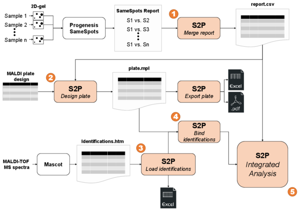

<
Application workflow
The S2P software is designed to support users in the following workflow of 2D-gel and MALDI-based mass spectrometry protein data analysis.

S2P workflow
(click in the image to enlarge)
In short, S2P allows you to:
- Import data from Progenesis SameSpots and save it as comma-separated values (CSV) files.
- Create MALDI plate designs and export them as PDF or CSV files.
- Import, process and save Mascot identifications reports.
- Bind Mascot identifications to spots data.
- Visualize and explore spots data in different ways.
Additionally, S2P allows you to import Mascot quantification reports in CSV format.